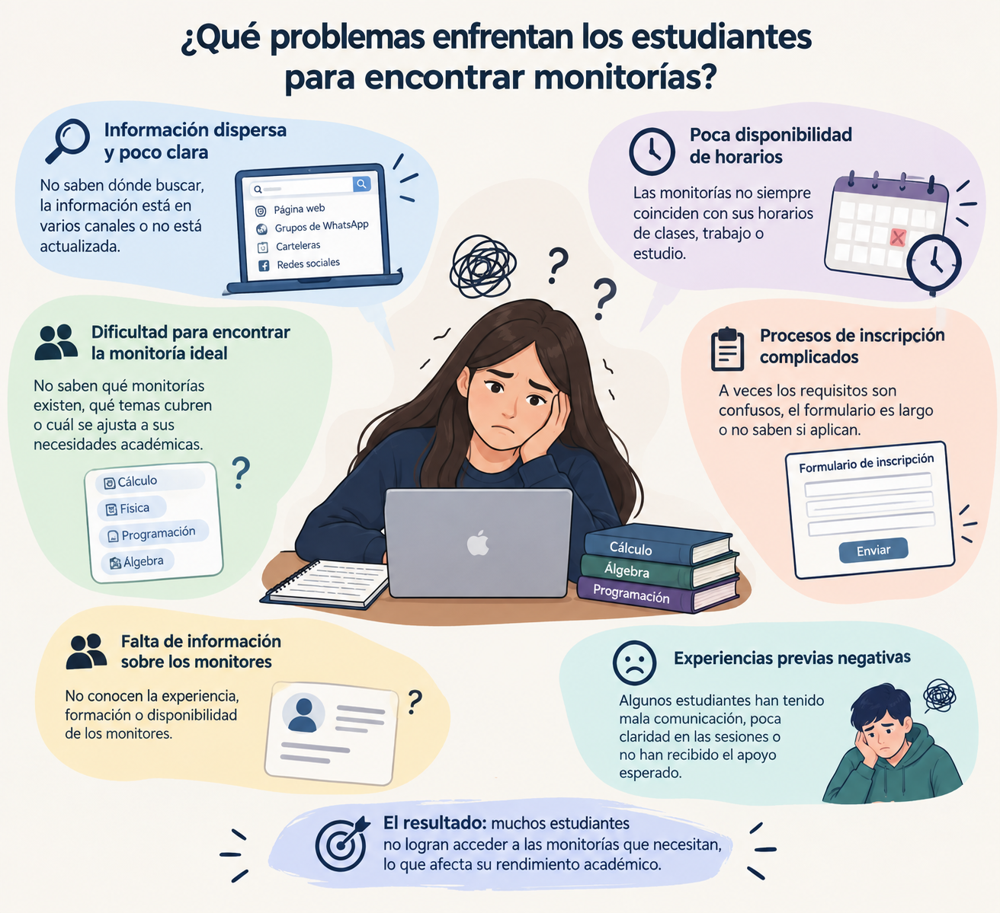
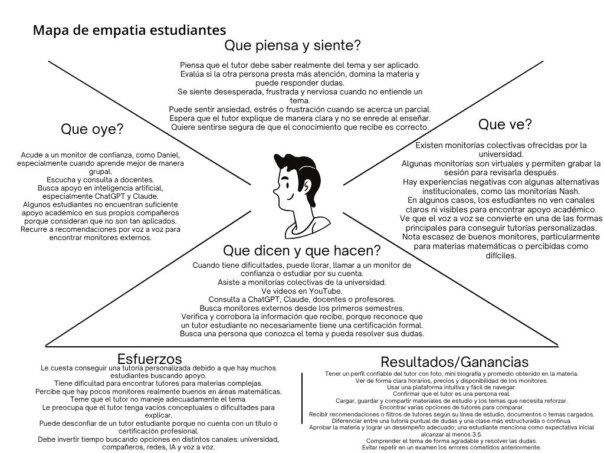
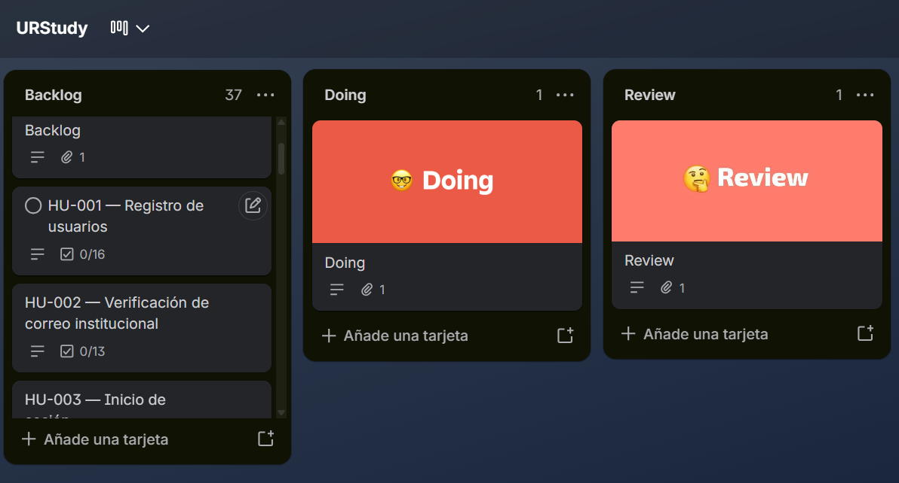
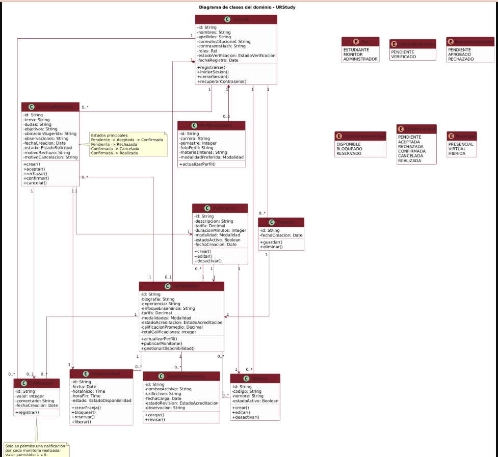
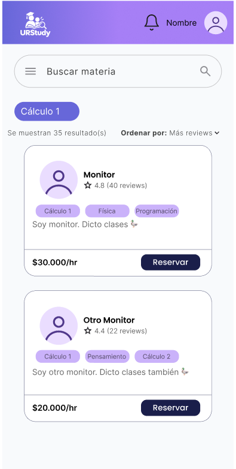
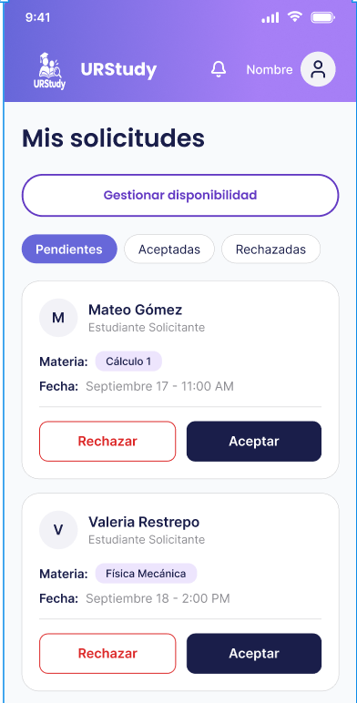
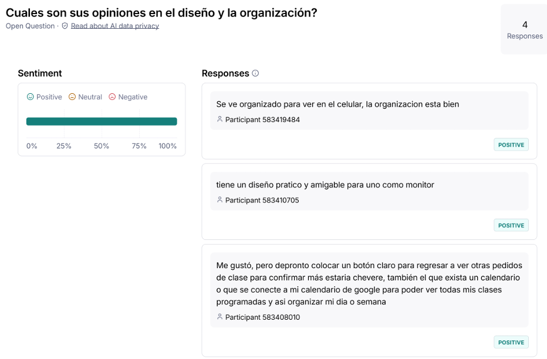

URStudy
Plataforma de gestión de monitorías universitarias para conectar estudiantes, monitores y procesos institucionales.
Camila Camacho Castellanos | Maria Fernanda Valeriano Pulido
Universidad del Rosario
Problema identificado
Las monitorías se gestionan con canales dispersos y coordinación manual. Esto dificulta encontrar apoyo académico confiable y organizar las sesiones.
Estudiantes
Les cuesta identificar monitores confiables, disponibles y adecuados para su necesidad.
Monitores
Necesitan visibilidad, control de su disponibilidad y gestión de solicitudes.
Proceso
Hay poca trazabilidad y existe riesgo de reservas duplicadas o información desactualizada.
Propuesta
Centralizar búsqueda, solicitud, confirmación, seguimiento y calificación.

Lo que aprendimos de los usuarios
Estudiantes
- Quieren comparar opciones con claridad.
- Valoran disponibilidad, tarifa y calificación.
- Necesitan solicitar apoyo rápidamente.
Monitores
- Requieren agenda organizada.
- Necesitan administrar solicitudes.
- Buscan seguridad y visibilidad.
Administración
- Debe verificar soportes.
- Gestiona materias y acreditaciones.
- Busca mayor trazabilidad.

Alcance del producto mínimo viable
Incluido en el MVP
- Registro e inicio de sesión institucional.
- Perfiles de estudiante y monitor.
- Publicaciones y disponibilidad.
- Búsqueda por materia, fecha, hora y modalidad.
- Solicitud, aceptación, rechazo y confirmación.
- Historial y calificación.
Mejoras futuras
- Recordatorios y reprogramación.
- Favoritos y autocompletado.
- Vista semanal avanzada.
- Integración con Google Calendar.
- Pagos integrados.
De necesidades a historias de usuario
Los requisitos se transformaron en 36 historias de usuario organizadas en Trello, con criterios de aceptación para frontend, backend y persistencia.
Flujo estudiante
Busca, compara, solicita, consulta historial y califica.
Flujo monitor
Publica, organiza disponibilidad y gestiona solicitudes.

Arquitectura y modelo de clases
Arquitectura modular
HTML, CSS, JS
Node.js + Express
MongoDB Atlas
Entidades
Usuario, perfiles, materia, publicación, disponibilidad y solicitud.
Seguimiento
Monitoría, cancelación, historial, calificación y reputación.

Diseño de interfaz en Figma


evaluados
definidas
prototipados
Pruebas de usabilidad con Maze
Monitores
Disponibilidad: 4 respuestas.
Reservas y solicitudes: 2 respuestas.
Experiencia promedio.
Estudiantes
Reserva de monitoría e historial: 2 respuestas registradas.
Experiencia registrada.
monitor
monitor
estudiante

Hallazgos y próximos pasos
Mejoras identificadas
- Calendario consolidado para el monitor.
- Regreso visible a solicitudes.
- Estado correcto al cancelar una sesión.
Próxima iteración
- Reforzar la identidad institucional.
- Agregar foto y recomendaciones de monitores.
- Ampliar pruebas con estudiantes.
URStudy no se diseñó solo desde una idea: se construyó a partir de investigación, requisitos, prototipos y retroalimentación de usuarios.